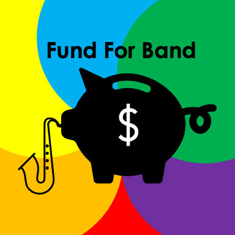

Fund For Band
Supporting Madeira Beach
Fundamental's band program
***Find us also on our GoFundMe here
|  |
What is Fund For Band?Madeira Beach Fundamental and its band program were severely impacted due to Hurricane Helene and Hurricane Milton during the Fall of 2024. Fund For Band helped provide for their lost and needed musical materials by raising money from November 25th, 2024 to January 6th, 2025. |
Goal Achieved! ($757/500)After starting the Fund For Band project on November 25th, 2024, we have raised $757 out of our $500 goal and have even received two musical instrument donations (a drum set and a violin)! This couldn't have been possible without our two events where you showed up to help Madeira Beach Fundamental's band program. Thank you for your support!
TECHNICAL DIFFICULTIES (GoFundMe) [Update April 1st, 2025]
|
Meet Fund For Band.Andrew Todica and Zachary Ratkiewicz started Fund For Band in November 2024 to support Madeira Beach Fundamental's band program, which was severely impacted by Hurricane Helene and Hurricane Milton. Contact us by clicking here. |
Fund For Band: Supporting Madeira Beach Fundamental's Band Program
What is Fund For Band?Madeira Beach Fundamental and its band program were severely impacted due to Hurricane Helene and Hurricane Milton during the Fall of 2024. Fund For Band helped provide for their lost and needed musical materials by raising money from November 25th, 2024 to January 6th, 2025. |
Goal Achieved! ($757/500)After starting the Fund For Band project on November 25th, 2024, we have raised $757 out of our $500 goal and have even received two musical instrument donations (a drum set and a violin)! This couldn't have been possible without our two events where you showed up to help Madeira Beach Fundamental's band program. Thank you for your support!
TECHNICAL DIFFICULTIES (GoFundMe) [Update April 1st, 2025]
|
Meet Fund For Band.Andrew Todica and Zachary Ratkiewicz started Fund For Band in November 2024 to support Madeira Beach Fundamental's band program, which was severely impacted by Hurricane Helene and Hurricane Milton. Contact us by clicking here. |